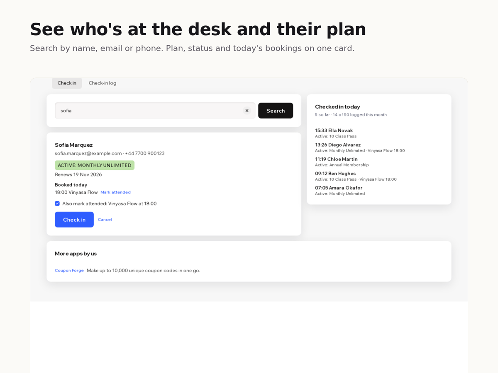

Roll Call
Check members in at the front desk and see their plan, payment and today's class
- Search by name, email or phone and see the member's plan, status and end date on one screen
- Warnings for unpaid plans, paused plans, plans ending this week and people with no plan
- One check-in also marks today's class as attended in your bookings
- A time-stamped check-in log you can filter by date and download as a spreadsheet

What it does
When someone walks up to your front desk, you need to know who they are and whether their membership is good. Roll Call puts both on one screen.
Type a name, email or phone number. You see the person's plan and its state: active and renewing, valid until a date, ending this week, paused, canceled, or not paid yet. Green means go, orange means have a word, red means there's no valid plan.
Below that is what they booked today. Press Check in and their class is marked attended, so attendance stays right without a second step. Each booking has an Undo for busy moments.
Every check-in goes into a log with the time, name, plan and status. The side panel lists today's arrivals, and the log tab shows any date range.
The free plan does all of this and logs the first 50 check-ins each month. After that, check-ins and attendance keep working but aren't logged. Premium logs every check-in and downloads the log as a CSV file. There is no member limit on either plan.
Works with your site's pricing plans and bookings. The log is stored in your site's CMS, and nothing leaves your site.
Price
Free
- Plan, payment and end date for any member
- Check-in marks today's class attended
- Log keeps 50 check-ins a month
Premium
$6/month, $5/month billed yearly. For a busy front desk
- Log keeps every check-in
- Download the log as CSV
- Everything in the free plan